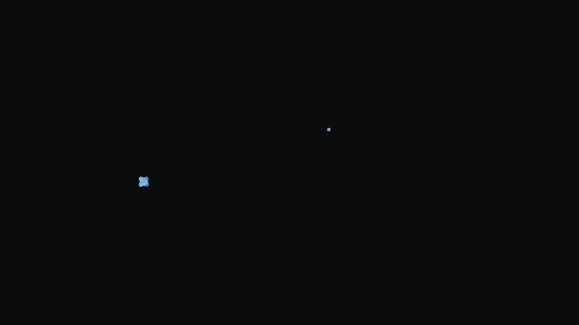
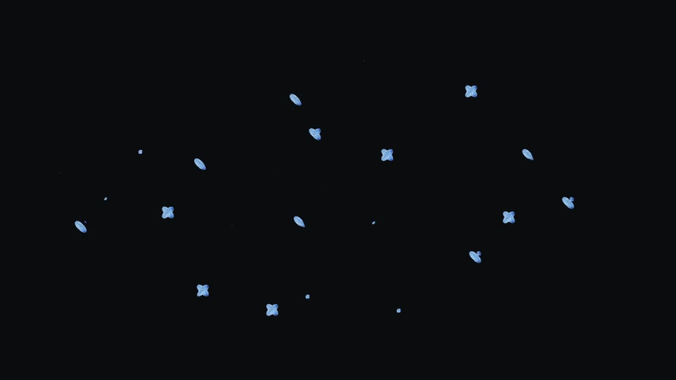
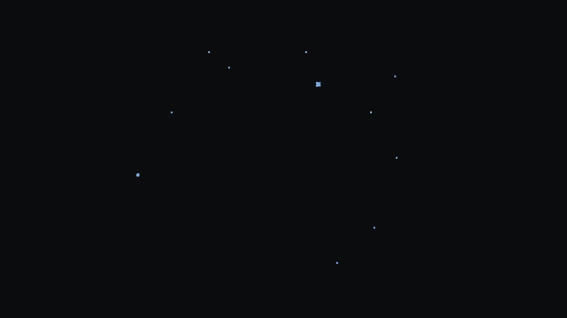

Uniqode / V400
Uniqode｜点阵文字聚散
让零散颗粒拼成一句可阅读的话，再用同一批颗粒拆开。
构图与编排 可播放 · 可替换内容
整体编排规则示例
查看 HTML 源码
<!doctype html><html lang="zh-CN"><meta charset="utf-8"><meta name="viewport" content="width=device-width,initial-scale=1"><title>Uniqode｜点阵文字聚散 · sequence</title><style>html,body{margin:0;width:100%;height:100%;overflow:hidden;background:#0c0d0e}canvas{display:block;width:100%;height:100%;object-fit:contain}</style><body data-mode="sequence"><canvas width="1000" height="600"></canvas><script src="data.js"></script><script src="common.js"></script><script src="scene.js"></script><script src="bridge.js"></script></body></html>画面元素浅蓝颗粒三行字形目标散开位置黑色背景
MOTION LANGUAGE
动作与构图
局部动作 · 构图规则
01
把字形作为颗粒的共同目标
把字形作为颗粒的共同目标规则示例
查看 HTML 源码
<!doctype html><html lang="zh-CN"><meta charset="utf-8"><meta name="viewport" content="width=device-width,initial-scale=1"><title>Uniqode｜点阵文字聚散 · sequence</title><style>html,body{margin:0;width:100%;height:100%;overflow:hidden;background:#0c0d0e}canvas{display:block;width:100%;height:100%;object-fit:contain}</style><body data-mode="clip" data-start="0" data-end="2.2"><canvas width="1000" height="600"></canvas><script src="data.js"></script><script src="common.js"></script><script src="scene.js"></script><script src="bridge.js"></script></body></html>浅蓝颗粒在黑底上从不同位置进入，先显现局部笔画，再形成完整三行文字。颗粒不需要按字符逐个出现。
02
先读完整句子，再让它散开
先读完整句子，再让它散开规则示例
查看 HTML 源码
<!doctype html><html lang="zh-CN"><meta charset="utf-8"><meta name="viewport" content="width=device-width,initial-scale=1"><title>Uniqode｜点阵文字聚散 · sequence</title><style>html,body{margin:0;width:100%;height:100%;overflow:hidden;background:#0c0d0e}canvas{display:block;width:100%;height:100%;object-fit:contain}</style><body data-mode="clip" data-start="3.8" data-end="5.4"><canvas width="1000" height="600"></canvas><script src="data.js"></script><script src="common.js"></script><script src="scene.js"></script><script src="bridge.js"></script></body></html>2–4 秒以完整句子为主，外围只保留轻微颗粒变化；退场沿原来的粒子身份拆开，不突然更换一套噪点。
03
以字宽控制内容容量
优先用短句与粗笔画，换词后重新生成字形采样；保留三行重心与聚散次序。
SEQUENCE
段落与节奏
点击段落，定位到上方编排示意。



画面参考 · 离散静帧
KEEP THE RELATIONSHIPS
制作其他主题
- 可替换三行短句，使用竖线分行；保留散→聚→读→散的阶段比例。
- 每行保持相近视觉宽度，避免细笔画、过小字号或过长句子导致点阵难读。
制作约束
浅蓝颗粒 / 三行字形目标 / 散开位置 / 黑色背景
- 颗粒先向字形目标聚集，形成完整三行句子；停留后再离开字形并消失。
- 颗粒大小和颜色保持一致，变化来自位置和密度；形成文字后不能一直随机漂移。
- 每个颗粒拥有可持续追踪的起点和目标，聚散使用同一组元素。